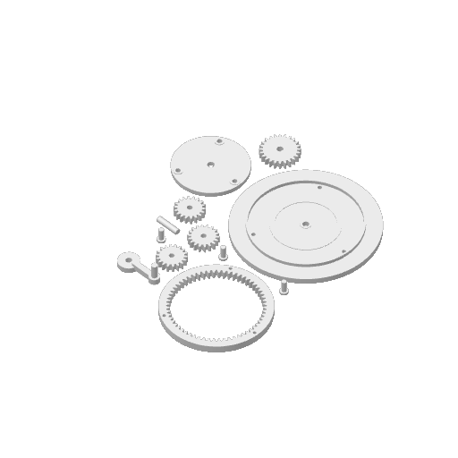

可手搖示範的行星齒輪組：太陽輪、三個行星輪、內齒圈、行星架、底座與搖柄，從簡化齒形原型一路改到漸開線 v2.1。

planetary_gear_model_v2.3mf：Bambu Studio 列印盤 1
| 類型 | 說明／下載 | 大小 |
|---|---|---|
| 3MF | v2 全部零件（Bambu Studio 專案，2 盤） planetary_gear_model_v2.3mf | 337 KB |
| 3MF | v1 原型（Bambu Studio 專案） planetary_gear_model.3mf | 195 KB |
| SCAD | OpenSCAD 參數檔 v2.1（最新） planetary_gear_model_v2_1.scad | 8 KB |
| SCAD | OpenSCAD 參數檔 v2 planetary_gear_model_v2.scad | 7 KB |
| SCAD | OpenSCAD 參數檔 v1 planetary_gear_model.scad | 5 KB |
| TXT | v1 說明：零件、參數、列印與組裝 README_zh-TW.txt | 3 KB |
FCStd 用 FreeCAD 1.1 開啟（參數在 Params 試算表）；3MF 可直接拖進 Bambu Studio 或其他切片軟體。